Explora Nuestros Programas
En Sunnies Support entendemos que cada estudiante tiene objetivos únicos para estudiar en el exterior. Por eso, ofrecemos una variedad de programas diseñados para satisfacer tus necesidades e intereses específicos. Estudiar japonés en Tokio, realizar un pregrado en Londres o perfeccionar tu nivel de inglés en Sydney, no importa tu objetivo, tenemos una opción para ti. Descubre todos nuestros programas:
Programas de Idiomas
Son el primer paso si todavia no dominas una segunda lengua
Estudia idiomas en el extranjero
Aprende inglés, francés, alemán o japonés en los mejoses destinos del mundo. En Sunnies Support, te ayudamos a encontrar programas de idiomas personalizados según tus objetivos. Desde cursos intensivos hasta programas a largo plazo.
Saber másEstudios Superiores
Inicia un pregrado o estudia una maestría, mejora tu perfil profesional y vive una experiencia única
Estudia idiomas en el extranjero
Aprende inglés, francés, alemán o japonés en los mejores destinos del mundo. En Sunnies Support, te ayudamos a encontrar programas de idiomas personalizados según tus objetivos. Desde cursos intensivos hasta programas a largo plazo.
Saber másProgramas de Idiomas
Son el primer paso si todavia no dominas una segunda lengua
Estudia idiomas en el extranjero
Aprende inglés, francés, alemán o japonés en los mejores destinos del mundo. En Sunnies Support, te ayudamos a encontrar programas de idiomas personalizados según tus objetivos. Desde cursos intensivos hasta programas a largo plazo.
Saber más